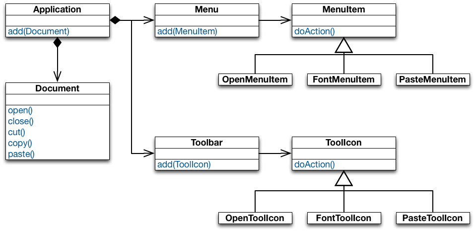
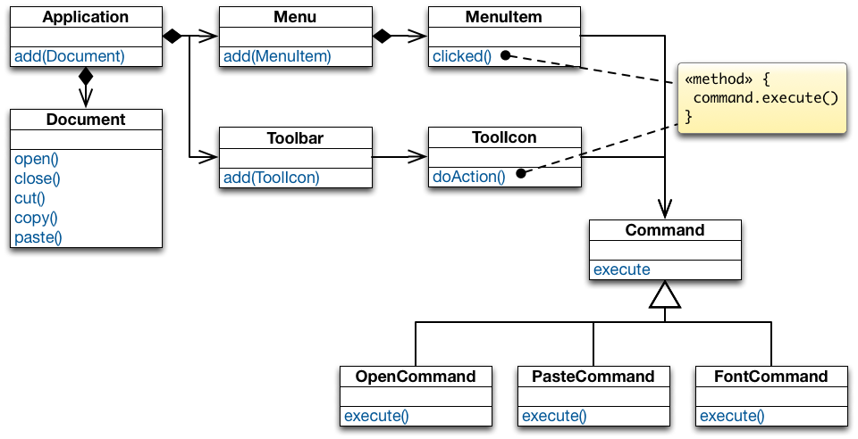
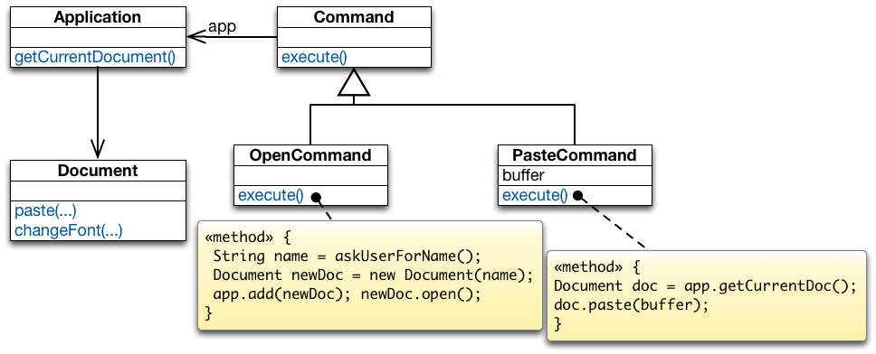
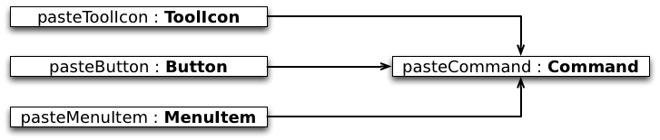
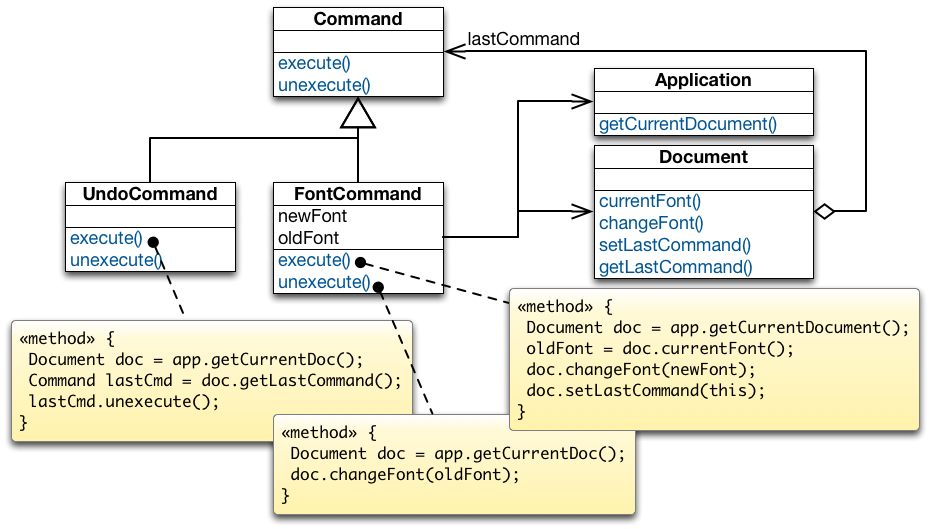
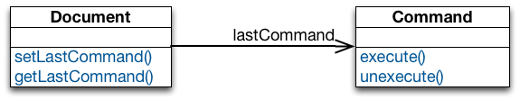
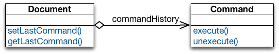
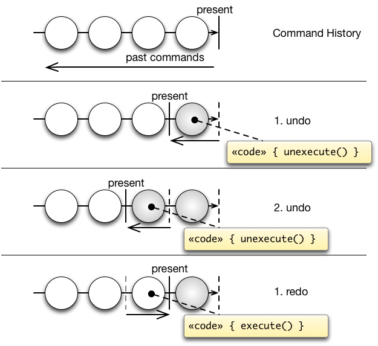

Command Design Pattern
Motivating Example: A Document Editor
Given some user operations such as "creating a document", "opening a file", "saving a document", "printing a document", "cutting selected text" and "pasting it back in", we then want to be able to access them from more than one place in the UI (a menu and a toolbar).
Motivating Example: A Document Editor

The implementation of each MenuItem subclass is the same as the implementation of one of ToolIcon subclasses.
Multiple copies of the same functionality → maintenance problem.
Need a mechanism for MenuItem and ToolIcon to share implementations.
Need to separate the user-interface control from it’s implementation so that implementations can be shared.
Want to also support a general undo capability so that the user can reverse previous operations.
Solution: Decouple Invoker from Receiver

Solution: Decouple Invoker from Receiver

In a Nutshell
Intent
Encapsulate a request to an object, thereby allowing to:
- Issue requests without knowing the receiver or the operation being requested.
- Parameterize clients with different requests.
- Queue or log requests and support undoable requests.
Command declares the interface for executing an operation.ConcreteCommand defines a receiver-action binding by implementing execute().Client creates a ConcreteCommand object, sets its Receiver, and configures the command of the Invoker.Invoker asks its command to carry out the request.Receiver knows how to perform the operations associated with carrying out a request.
Advantages of Command
Implementation Sharing

- A command centralizes an operation to a single location so that multiple copies of the code are not necessary.
- Different user-interface controls can share the same implementation
(e.g., a button, tool icon, and menu item can all perform the same operation).
- Decouples the user interface from the operation being performed.
Supporting Undoable Operations

Commands store enough information to undo the performed operation.- Each command subclass implements its
unexecute() function;
when unexecute() is called the command reverses its action.
Supporting Multiple Levels Of Undo
Single Level of Undo

Multiple Levels of Undo

- Undoing more than just the last command allows the user to back up farther and farther each time undo is selected from the menu.
- Adding a redo feature: it would also be nice for a user to be able to redo an undone operation.
Redo should have multiple levels corresponding to the number of undo's issued by the user.
Implementing a Command History

The command history can be seen as a list of past commands.
As new commands execute they are added to the front of the history.
To undo a command, unexecute() is called on the command at the front of the list.
The present pointer is moved past that command.
To undo the command before that, unexecute() is called on the next command in the history.
The present pointer is moved to point before that command.
To redo the command that was just undone, execute() is called on that command.
The present pointer is moved up past that command.
Takeaway
Takeaway
Command allows to decouple the invoker of an operation from the receiver of that operation.
A Command object encapsulates the knowledge about a concrete operation and a concrete receiver of that operation.
As a result:
- the same invoker can be reused with different operation-receiver pairs.
- the same operation-receiver pair can be plugged into different invokers.
- commands can be queued, undone/redone, and composed into macro-commands.
Example Implementation
In practice (in GUI applications), you often have multiple instances of the command design pattern which are related to different kinds of actions.
- The command pattern is used to associate some action with a menu item or a tool bar icon and which (as a second step) then may require some further user input/interacts with the environment. These commands are usually not stored in any command history as it makes no sense to redo/undo them (e.g., "open file", "save file", "copy text to clipboard").
- You have commands that update the state of an application (i.e., manipulates the application's data) and which you may want to store in the command history because you want to be able to undo/redo the corresponding action. These commands then have to offer an
execute and unexecute methods.
Some commands, e.g., "paste clipboard content" are typically triggered by some user interaction, but do not require any further user interaction and, hence, could be regarded as a command of the second type. But, this is deceiving. Imagine that - at some later point in time - the user undos the last editing steps including the pasting of the clipboard content. When the user then redos that step, he expects that the same content is added again as was just removed/originally added – even if the clipboard content has changed in the meantime. Hence, even in this case we want to distinguish between the command that interacts with the environment and the command that directly (after gathering all information) with the document.
Example Implementation
Supporting multiple-step undo/redo
The application:
object Application { var document: String = "" }
The Command trait:
trait Command {
def execute(): Unit
def unexecute(): Unit
}
Example Implementation
Supporting multiple-step undo/redo
A ConcreteCommand to manipulate the document:
class AddTextCommand(val text: String) extends Command {
import Application.document
def execute() { document += text }
def unexecute() {
document = document.substring(0, document.length - text.length)
}
override def toString = "Add text: "+text
}
Example Implementation
Supporting multiple-step undo/redo
The command history:
object CommandManager {
private var pastCommands: List[Command] = Nil
private var futureCommands: List[Command] = Nil
def execute(command: Command) {
command.execute()
pastCommands = command :: pastCommands
futureCommands = Nil // kill all previous future commands
}
def undo() {
if (pastCommands.nonEmpty) {
val pastCommand = pastCommands.head; pastCommand.unexecute()
futureCommands = pastCommand :: futureCommands
pastCommands = pastCommands.tail
} }
def redo() {
if (futureCommands.nonEmpty) {
val futureCommand = futureCommands.head; futureCommand.execute()
pastCommands = futureCommand :: pastCommands
futureCommands = futureCommands.tail
} } }
In this case, the responsibility for calling a ConcreteCommand's execute method is delegated to the CommandManager.
Example Implementation
Supporting multiple-step undo/redo
Creating a command object and adding it to the history:
object askForInput extends (() ⇒ Unit) {
def apply() {
import javax.swing.JOptionPane.showInputDialog
val text = showInputDialog("Please, enter some text.")
if (text ne null) {
CommandManager.execute(new AddTextCommand(text))
}
}
}
The askForInput object has the responsibility to ask the user for some input and to add the respective input to the document. This object is also a ConcreteCommand where the execute method is called apply.
Example Implementation
Supporting multiple-step undo/redo
Example usage:
object CommandDemo extends App {
for (i ← 0 until 3) {
askForInput()
}
CommandManager.undo
CommandManager.undo
CommandManager.redo
}